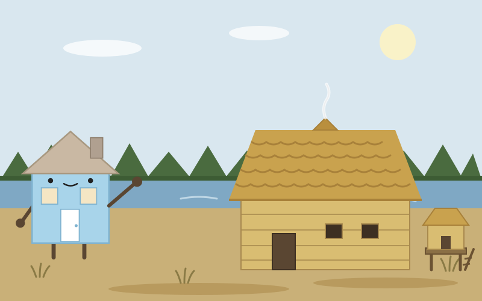
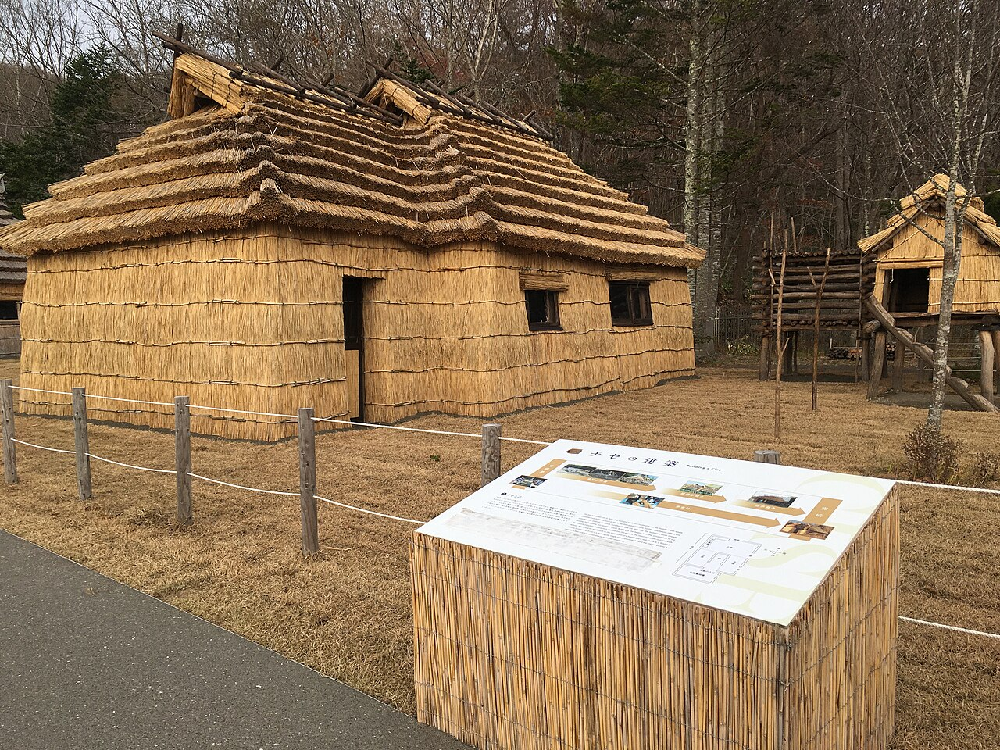
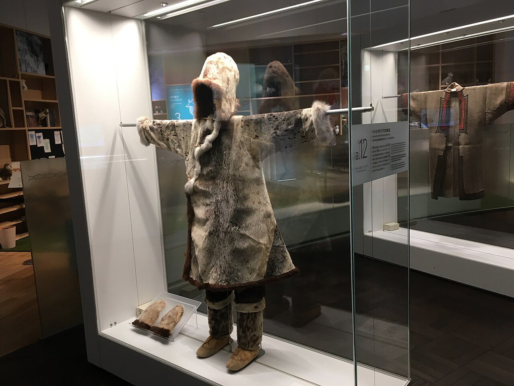

Day 12：白老町

茅葺きの屋根に、手を伸ばしかけてやめた。目の前のチセは、茅の一束一束が重なって、大きな波のようにうねっている。入口は低く、かがまなければ入れない。風が吹くと、茅の先がさわさわと鳴って、乾いた草の匂いがした。ポロト湖のほとり、ウポポイの伝統的コタンに立つ、復元されたアイヌの家だ。私も家だ。けれどこの家は、私の知っている家とは、まるで違う作りだった。

ここへは室蘭市から来た。室蘭駅6時54分発の特急すずらんで、白老駅に7時34分着。39分、43.4キロ、2,200円。車窓には内浦湾の水面が続いた。白老駅で降りて、ポロト湖畔へ歩く。湖の向こうに、静かな森があった。
ウポポイはアイヌ語で「（大勢で）歌う」という意味で、2020年7月12日に開いた民族共生象徴空間だ。中の国立アイヌ民族博物館は、アイヌの歴史と文化を主題にした日本で初めての国立博物館で、日本最北の国立博物館でもある。チセは掘立柱を地面に立て、柱と梁を組んで屋根を支えた、茅葺きの家だ。釘は使わず、柱や梁はブドウヅルなどの蔓で縛る。屋根は地面の上で組んでから、みんなで持ち上げて柱の上に載せるという。家の中央にはアペオイ、囲炉裏が切ってあって、そこに火の神アペフチカムイがいる。炉の火は一年を通じて絶やさない。家の最深部の壁には神窓カムイプヤㇻがあって、神だけが出入りする。炉を囲む席も決まっていて、北東が戸主の席、東側が客人の上座だ。家のそばには穀物や干し肉を蓄える高床の倉プが立つ。こうした家が数軒から十数軒集まって、コタンになる。

私の家は築60年ほどの木造で、火は台所の隅のコンロに小さくあるだけだ。壁と屋根と床でできていて、火は道具の一つにすぎない。けれどチセでは、火が家の真ん中にいて、火そのものが神で、家を守っている。湿気と戦っている私の家は、水を追い出すことばかり考えてきた。火を絶やさないことで家を守るという考え方は、私にはなかった。神窓の話を聞いて、少し戸惑った。神だけが通る窓を、うっかり覗いてはいけないのだという。私の家にも客を迎える席はあるけれど、神の出入り口はない。家と家のあいだにも、礼儀があるのだと知った気がした。
湖畔を歩きながら、白老牛と虎杖浜たらこの話を耳にした。白老の食卓は、海と牧場の両方に支えられている。帰りの列車に乗る前に、もう一度チセの屋根を見上げた。茅の波の向こうに、ポロト湖の水面が光っていた。私の家に帰ったら、台所の火を、もう少しだけ家の真ん中に置いてみようと思う。火を絶やさない家のことを、忘れないうちに。
出典：Wikipedia「ウポポイ」「チセ」「白老町」、東京国立博物館「住まう」、NAVITIME「室蘭から白老までの乗換案内」、駅探「室蘭本線 すずらん 停車駅一覧」。
💬 コメント